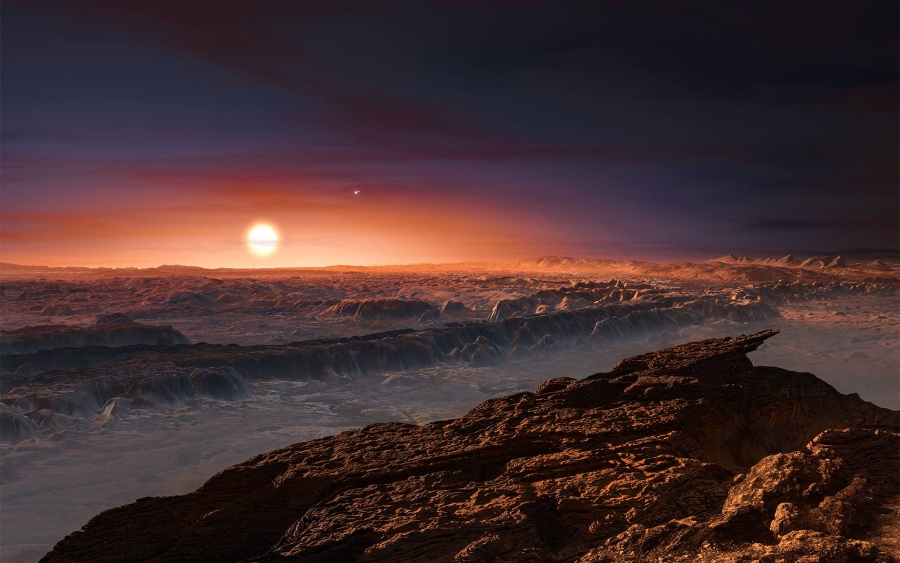

What is Centauri b?
Welcome to Centauri b: a super Earth outside of the solar system! This exoplanet was discovered in 2016. It's next to the star Proxima Centauri and takes 11.2 days to orbit around the star. Years ago, the UV radiation was strong enough to reduce the amount of oxygen and hydrogen molecules. Today, scientists developed technology to strengthen the exoplanet's atmosphere and reduce the impact of the UV radiation. Despite making this planet habitable, the nearest water source is still Proxima Centauri. Because of this, well systems are implemented across the planet.
Activities Available
- Visit Centauri b's neighboring star Proxima Centauri with Star Wonders
- Bathe in Proxima Centauri's hot springs and lazy river
Lodging Offered
- Star Struck Resort: $120 per night
- Lightyears Hotel: $65 per night
- Centauri Domes: $85 per night
Reviews
"My husband and I were the first to travel outside of the solar system for the grand opening! We were a bit concerned, but the staff here made sure everything went well.The hot springs were so relaxing and the weather wasn't too bad. It seems like they're still adding activities and precautions, but this is a strong start."- Samantha Killian
"The Proxima Centauri tour was amazing! I loved learning about the star!"- Jack Fisher
"The well system here is surprisingly efficient! The staff told us how they use the gravitational pull of the orbit to transport the water, and how its transported to a giant reservoir that the modern wells are connected to. They really thought this through!"- Matthew Brown